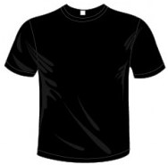
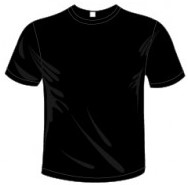

FIFA World Cup™ finals history
After several agonising near-misses Japan finally reached the 1998 FIFA World Cup. Though they suffered three straight defeats to bow out, Korea/Japan 2002 saw them make history on home soil in Asia's first FIFA World Cup, winning their group ahead of Russia, Belgium and Tunisia before a tough 1-0 last-16 defeat against eventual third-place finishers Turkey. Their next two World Cups followed a similar pattern with Japan exiting Germany 2006 with just a point, only to redeem themselves four years later. They saw off Denmark and Cameroon and were a penalty shoot-out away from a groundbreaking quarter-final appearance at South Africa 2010. Brazil 2014 again proved disappointing with another group-stage exit, despite a promising showing at the FIFA Confederations Cup a year earlier. They became the second Asian team to qualify for Russia 2018, joining Iran with victory against Australia on 31 August 2017 to progress from Asia's Group B.
The team
Recent years have proved mixed for Japan. They were the first nation to qualify for Brazil 2014 only to flop, with that pain compounded by an unexpected quarter-final exit at the 2015 AFC Asian Cup to end their continental reign. Now the challenge for Samurai Blue is to regather from those disappointments. They certainly have the personnel to do it with an increasing number of players starring in Europe, in particularly the German Bundesliga. Headlining a star-studded roster is poster-boy Keisuke Honda at AC Milan and Borussia Dortmund’s Shinji Kagawa.
The coach
Vahid Halilhodzic was appointed in early 2015 following the disappointing six-month term of Mexican Javier Aguirre. The Bosnian-born Halilhodzic was a star forward with Yugoslavia and in France’s Ligue 1, and after a long coaching career, he earned global recognition by guiding Algeria to the knockout stage at Brazil 2014.
The stat
4 – Japan have won four of their 17 matches at the World Cup.
The former stars
Kazuyoshi Miura, Shunsuke Nakamura, Hidetoshi Nakata, Yasuhito Endo
 

To learn more about the players of Japon, visit the official website of FIFA, where you can see all the statistics of each player Click here to go...
 Vahid Halilhodžić.DT
Vahid Halilhodžić.DT
Kawashima
Nagamoto
Nakazawa
Shoji

Yoshida

Hasebe
Abe
Endó

Muto
Honda
Okubo